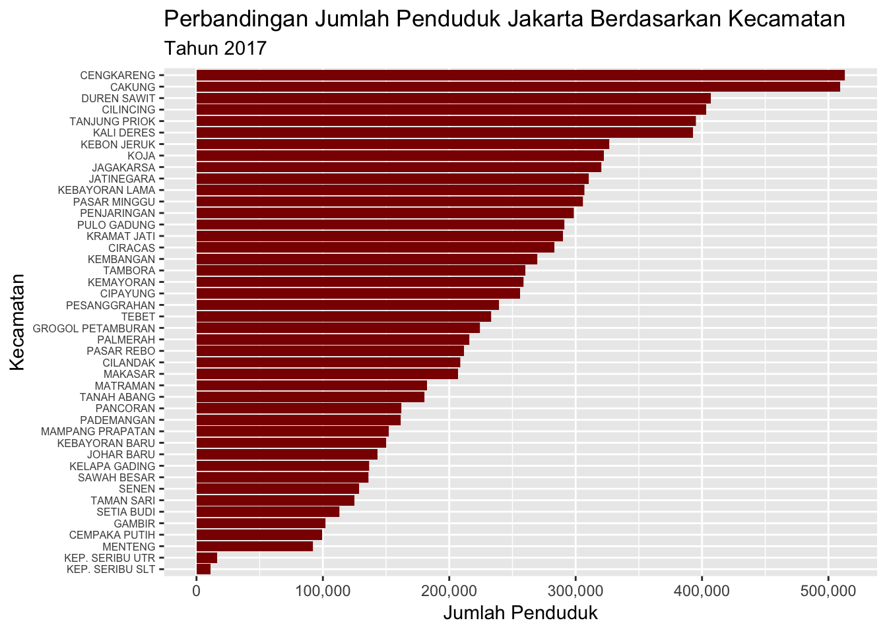
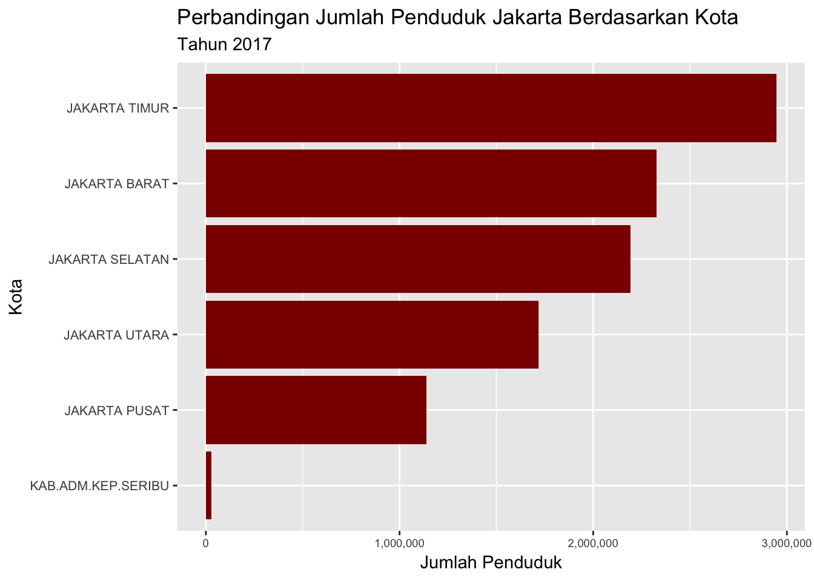
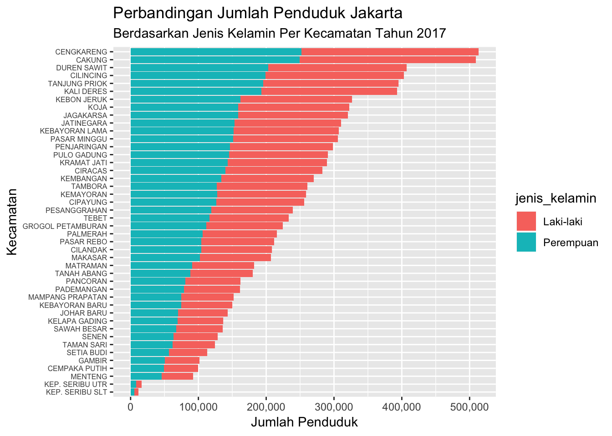
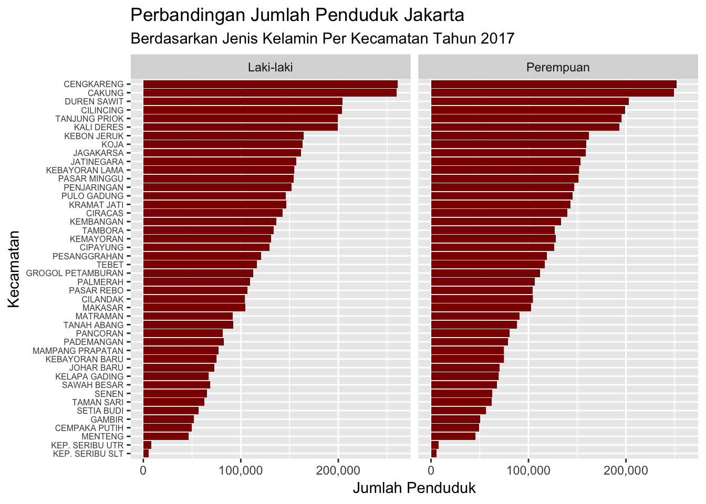
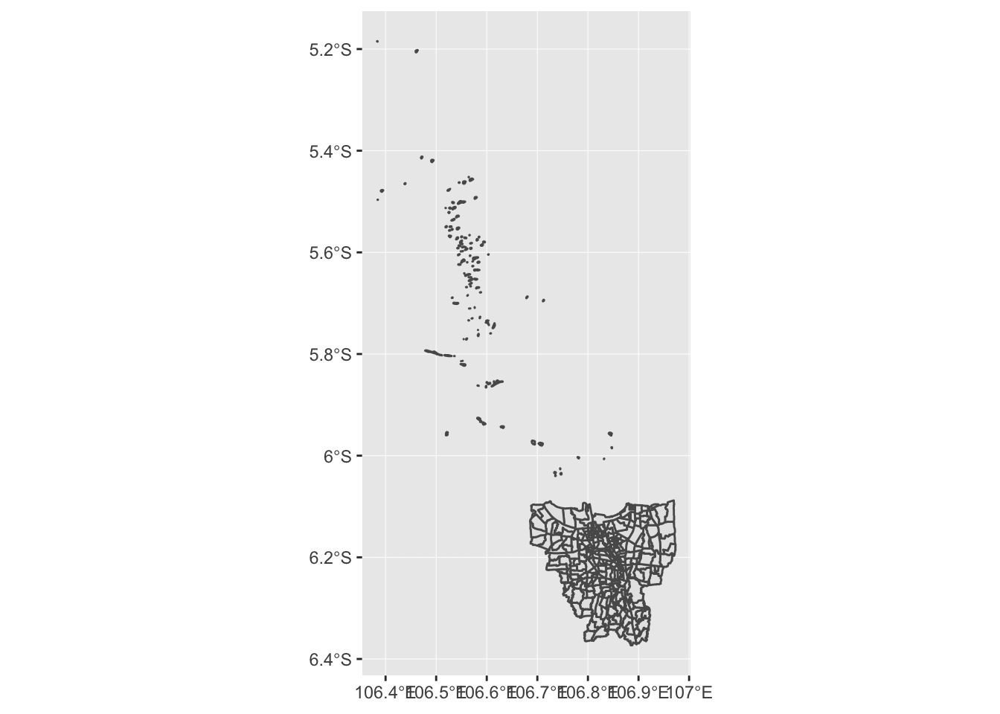
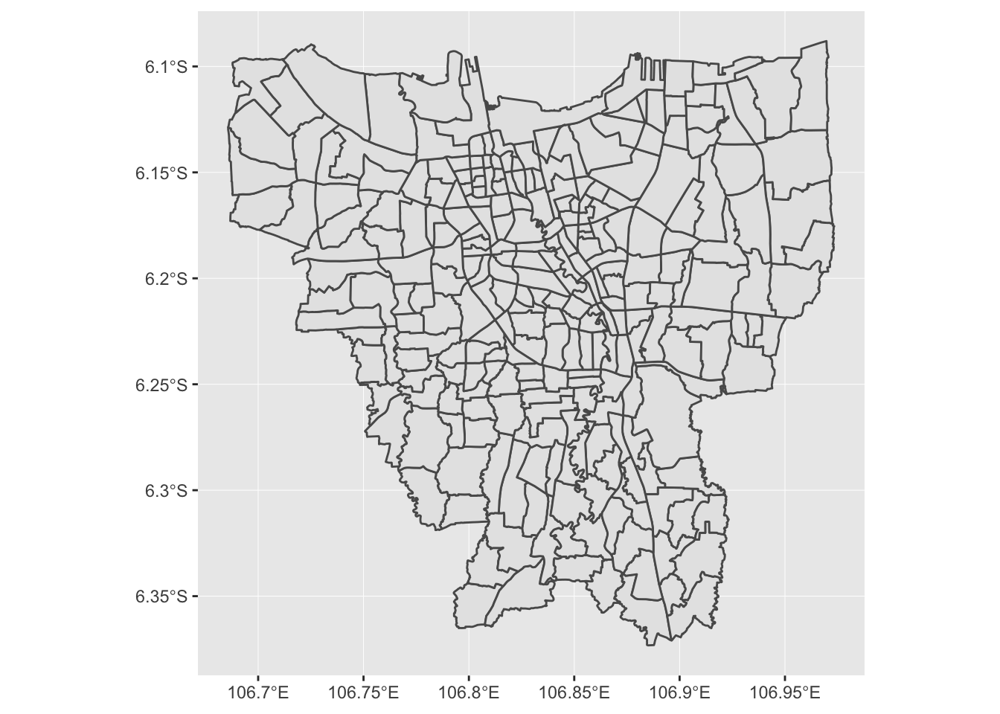
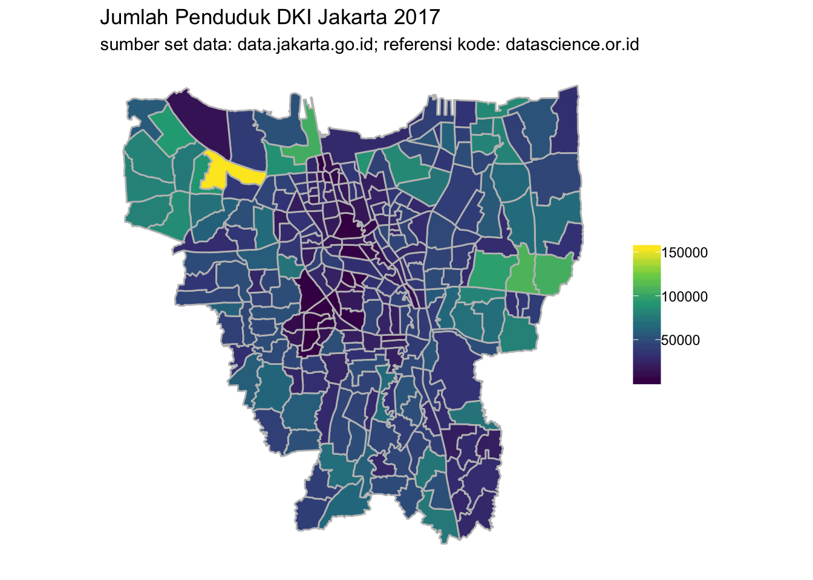
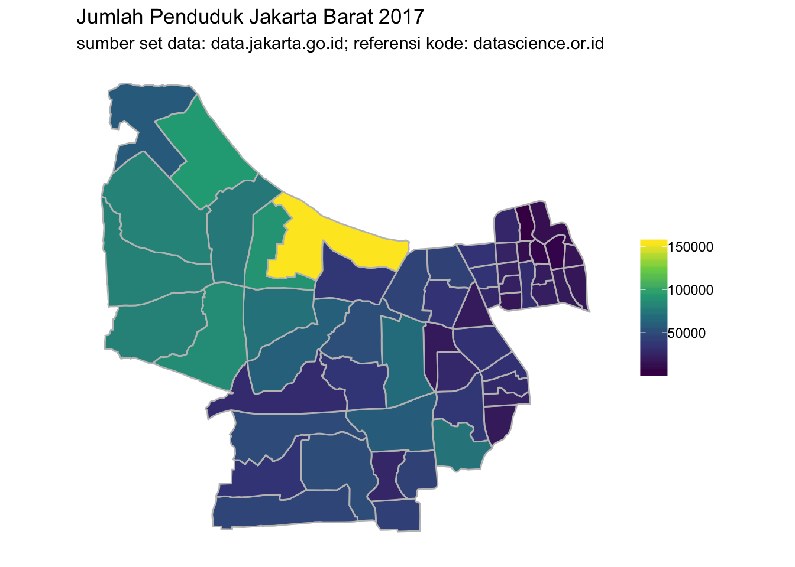

Langkah Kilat 3 Latihan, Latihan, Latihan
Ya, tidak ada yang spesial atau hal yang wah di langkah ketiga ini. Untuk bisa mahir analisis data, Anda harus banyak latihan.
Baca kembali 2 langkah sebelumnya, terutama langkah kedua. Kuasai teknik dasar analisis terlebih dahulu.
Jalankan kode programnya, copy paste boleh, pelajari cara kerja dan konsepnya. Setelah Anda sudah tidak merasa asing dengan sistem pemrograman R, coba Anda ketik kode programnya, tidak copy paste. Dengan mengetik, Anda akan lebih cepat terbiasa dengan beberapa fungsi yang sering digunakan untuk mengolah data.
Lalu, Anda coba latihan dengan set data yang lain. Jelajahi set data tersebut dengan fungsi-fungsi yang sudah dibahas di buku ini.
Berikut akan disajikan bagaimana cara melakukan analisis data dari mulai proses pengambilan sampai dengan mendapatkan insight. Fungsi-fungsi yang digunakan pada contoh kali ini sebagian sudah dibahas di bagian sebelumnya dan sebagian akan dibahas beriringan dengan penulisan kode.
3.1 Unduh, Inisiasi, dan Mempersiapkan Set Data
Set data yang akan digunakan dapat diunduh secara manual pada tautan berikut:
Anda bisa langsung inisiasi dan menyimpan set data ini ke dalam variabel tanpa harus mengunduhnya terlebih dahulu.
# Meyimpan alamat tautan (URL) data penduduk Jakarta berdasarkan jenis kelamin dan kewarganegaraan dalam variabel alamat
alamat <- "http://data.jakarta.go.id/dataset/aed0be8f-b36e-457c-9210-6f5e970b987c/resource/5a948e1c-facd-4eec-8943-bef5c45d16d8/download/Data-Jumlah-Penduduk-Berdasarkan-Kewarganegaraan-dan-Jenis-Kelamin-Tahun-2017.csv"
# Membaca file csv dari set data dan memasukkannya ke dalam variabel
df.penduduk <- read.csv(alamat, sep = ",")Set data kependudukan Jakarta tersedia dalam bentuk file csv, sehingga untuk membaca data tersebut digunakan fungsi read.csv.
Melihat struktur dari set data df.penduduk.
str(df.penduduk)## 'data.frame': 1068 obs. of 8 variables:
## $ tahun : int 2017 2017 2017 2017 2017 2017 2017 2017 2017 2017 ...
## $ provinsi : Factor w/ 1 level "DKI Jakarta": 1 1 1 1 1 1 1 1 1 1 ...
## $ kabupaten : Factor w/ 6 levels "JAKARTA BARAT",..: 6 6 6 6 6 6 2 2 2 2 ...
## $ kecamatan : Factor w/ 44 levels "CAKUNG","CEMPAKA PUTIH",..: 22 22 22 21 21 21 9 9 9 9 ...
## $ kelurahan : Factor w/ 267 levels "ANCOL","ANGKE",..: 165 164 163 168 167 166 55 24 195 194 ...
## $ kewarganegaraan: Factor w/ 2 levels "WNA","WNI": 2 2 2 2 2 2 2 2 2 2 ...
## $ jenis_kelamin : Factor w/ 2 levels "Laki-laki","Perempuan": 1 1 1 1 1 1 1 1 1 1 ...
## $ jumlah : int 3426 3546 1241 1204 2797 1688 1645 9802 11224 9333 ...Seperti yang Anda lihat, beberapa variabel seperti provinsi, kabupaten, kecamatan, kelurahan, kewarganegaraan, serta jenis kelamin sudah bertipe faktor, sehingga tidak perlu diubah lagi. Variabel yang lain seperti tahun dan jumlah sudah benar bertipe integer.
Yang perlu sedikit diubah adalah penamaan variabel kabupaten. Di DKI Jakarta, penamaan wilayah administratif setelah propinsi lebih tepatnya kota, bukan kabupaten.
Masih ingat bagaimana cara mengubah nama variabel?
# Mengubah nama variabel kabupaten menjadi kota pada set data df.penduduk
names(df.penduduk)[3] <- "kota"Bagaimana dengan informasi jumlah penduduk Jakarta?
# Jumlah total penduduk Jakarta
sum(df.penduduk$jumlah)## [1] 10348570# Jumlah penduduk Jakarta terbanyak berdasarkan kecamatan
df.penduduk %>%
select(kecamatan, jumlah) %>%
group_by(kecamatan) %>%
summarise(jumlah = sum(jumlah)) %>%
arrange(-jumlah) %>%
head(5)## # A tibble: 5 x 2
## kecamatan jumlah
## <fct> <int>
## 1 CENGKARENG 513064
## 2 CAKUNG 509194
## 3 DUREN SAWIT 406998
## 4 CILINCING 403028
## 5 TANJUNG PRIOK 395022# Jumlah penduduk Jakarta paling sedikit berdasarkan kecamatan
df.penduduk %>%
select(kecamatan, jumlah) %>%
group_by(kecamatan) %>%
summarise(jumlah = sum(jumlah)) %>%
arrange(jumlah) %>%
head(5)## # A tibble: 5 x 2
## kecamatan jumlah
## <fct> <int>
## 1 KEP. SERIBU SLT 11342
## 2 KEP. SERIBU UTR 16249
## 3 MENTENG 92026
## 4 CEMPAKA PUTIH 99263
## 5 GAMBIR 101832# Peringkat jumlah penduduk Jakarta berdasarkan kota
df.penduduk %>%
select(kota, jumlah) %>%
group_by(kota) %>%
summarise(jumlah = sum(jumlah)) %>%
arrange(-jumlah)## # A tibble: 6 x 2
## kota jumlah
## <fct> <int>
## 1 JAKARTA TIMUR 2946926
## 2 JAKARTA BARAT 2327258
## 3 JAKARTA SELATAN 2190919
## 4 JAKARTA UTARA 1716591
## 5 JAKARTA PUSAT 1139285
## 6 KAB.ADM.KEP.SERIBU 275913.2 Visualisasi Grafik
Set data kependudukan df.penduduk ini dari awal sudah lumayan rapih dan tidak diperlukan proses manipulasi. Langkah berikutnya menggunakan ggplot untuk memvisualisasikan data agar bisa mendapatkan insight dari set data kependudukan ini.
# Inisiasi paket ggplot dan dplyr
library(ggplot2)
library(dplyr)
df.penduduk %>%
ggplot(aes(x = reorder(kecamatan, jumlah, sum), y = jumlah)) +
geom_bar(stat = "identity", fill = "#8B0000") +
coord_flip() +
theme(axis.text.y = element_text(size = 6)) +
scale_y_continuous(labels = scales::comma_format()) +
labs(x = "Kecamatan", y = "Jumlah Penduduk") +
ggtitle("Perbandingan Jumlah Penduduk Jakarta Berdasarkan Kecamatan",
subtitle = "Tahun 2017")
Penjelasan kode:
ggplot(aes(x = reorder(kecamatan, jumlah, sum), y = jumlah)): mengurutkan faktor kecamatan berdasarkan jumlah dengan fungsireorder.theme(axis.text.y = element_text(size = 6)): mengatur huruf pada axis y menjadi berukuran 6.scale_y_continuous(labels = scales::comma_format(): mengatur skala angka menjadi format yang mudah dibaca.
df.penduduk %>%
ggplot(aes(x = reorder(kota, jumlah, sum), y = jumlah)) +
geom_bar(stat = "identity", fill = "#8B0000") +
coord_flip() +
theme(axis.text.y = element_text(size = 8)) +
theme(axis.text.x = element_text(size = 7)) +
scale_y_continuous(labels = scales::comma_format()) +
labs(x = "Kota", y = "Jumlah Penduduk") +
ggtitle("Perbandingan Jumlah Penduduk Jakarta Berdasarkan Kota",
subtitle = "Tahun 2017")
df.penduduk %>%
ggplot(aes(x = reorder(kecamatan, jumlah, sum), y = jumlah)) +
geom_bar(stat = "identity", aes(fill = jenis_kelamin)) +
coord_flip() +
theme(axis.text.y = element_text(size = 6)) +
scale_y_continuous(labels = scales::comma_format()) +
labs(x = "Kecamatan", y = "Jumlah Penduduk") +
ggtitle("Perbandingan Jumlah Penduduk Jakarta",
subtitle = "Berdasarkan Jenis Kelamin Per Kecamatan Tahun 2017")
Argumen fill pada kode di atas berfungsi untuk menampilkan atribut estetik berdasarkan variabel jenis_kelamin, sehingga pada grafik terlihat komposisi penduduk laki-laki dan perempuan yang berbeda warna.
df.penduduk %>%
ggplot(aes(x = reorder(kecamatan, jumlah, sum), y = jumlah)) +
geom_bar(stat = "identity", fill = "#8B0000") +
coord_flip() +
theme(axis.text.y = element_text(size = 6)) +
scale_y_continuous(labels = scales::comma_format()) +
facet_wrap(~jenis_kelamin) +
labs(x = "Kecamatan", y = "Jumlah Penduduk") +
ggtitle("Perbandingan Jumlah Penduduk Jakarta",
subtitle = "Berdasarkan Jenis Kelamin Per Kecamatan Tahun 2017")
Fungsi facet_wrap() membuat grafik terbagi menjadi dua kolom berdasarkan jenis kelamin. Opsi ini mempermudah pengguna untuk melihat lebih detail untuk masing-masing kategori.
3.3 Visualisasi Peta
Visualisasi data juga dapat ditampilkan dalam bentuk peta. Selain cukup informatif, visualisasi peta juga secara estetis indah dipandang dan keren.
Untuk membuat visualisasi peta Jakarta, Anda perlu menginstal paket berikut terlebih dahulu.
install.packages("devtools")
install.packages("sf")
devtools::install_github("tidyverse/ggplot2")
devtools::install_github("rasyidstat/indonesia") Inisiasi paket dan persiapan visualiasi peta Jakarta.
# Persiapan data spasial peta Jakarta dengan pembagian wilayah kelurahan
kelurahan.jkt <- id_map("jakarta", "kelurahan")
# Menampilkan struktur set data kelurahan.jkt
str(kelurahan.jkt)## Classes 'sf' and 'data.frame': 377 obs. of 9 variables:
## $ kode_provinsi : int 31 31 31 31 31 31 31 31 31 31 ...
## $ nama_provinsi : Factor w/ 1 level "DAERAH KHUSUS IBUKOTA JAKARTA": 1 1 1 1 1 1 1 1 1 1 ...
## $ kode_kota : int 3171 3172 3172 3172 3172 3171 3172 3172 3171 3172 ...
## $ nama_kota : Factor w/ 6 levels "Jakarta Barat",..: 3 4 4 4 4 3 4 4 3 4 ...
## $ kode_kecamatan: int 3171010 3172020 3172030 3172030 3172010 3171010 3172010 3172020 3171010 3172030 ...
## $ nama_kecamatan: Factor w/ 45 levels "Cakung","Cempaka Putih",..: 11 7 6 6 34 11 34 7 11 6 ...
## $ kode_kelurahan: num 3.17e+09 3.17e+09 3.17e+09 3.17e+09 3.17e+09 ...
## $ nama_kelurahan: Factor w/ 267 levels "Ancol","Angke",..: 35 23 202 162 179 236 87 122 25 34 ...
## $ geometry :sfc_POLYGON of length 377; first list element: List of 1
## ..$ : num [1:1283, 1:2] 107 107 107 107 107 ...
## ..- attr(*, "class")= chr "XY" "POLYGON" "sfg"
## - attr(*, "sf_column")= chr "geometry"
## - attr(*, "agr")= Factor w/ 3 levels "constant","aggregate",..: NA NA NA NA NA NA NA NA
## ..- attr(*, "names")= chr "kode_provinsi" "nama_provinsi" "kode_kota" "nama_kota" ...Melalui fungsi str() diketahui bahwa set data kelurahan.jkt bertipe ‘sf’ dan ‘data.frame’. Simple features atau sf adalah bentuk set data yang didalamnya berisi variabel geometri dua dimensi (titik, garis, poligon). Di dalam set data kelurahan.jkt diwakili oleh variabel ‘geometry’.
Untuk memvisualisasikan peta, gunakan paket ggplot diikuti dengan fungsi geom_sf().
# Visualisasi peta dasar Jakarta
kelurahan.jkt %>% ggplot() + geom_sf()
Visualisasi peta dasar Jakarta yang dihasilkan dari kode di atas tidak terlalu bagus. Seperti yang Anda lihat, Kepulauan Seribu termasuk dalam wilayah Jakarta, sehingga visualisasi yang dihasilkan mencakup seluruh wilayah administratif sesuai variabel pada set data kelurahan.jkt. Agar visualisasi yang dihasilkan lebih estetis, maka wilayah Kepulauan Seribu akan dikeluarkan dari set data.
# Mengeluarkan data observasi kecamatan KEPULAUAN SERIBU
# dan memvisualisasikan peta dengan ggplot dan fungsi geom_sf
kelurahan.jkt %>%
filter(!nama_kecamatan %in% c("KEPULAUAN SERIBU UTARA", "KEPULAUAN SERIBU SELATAN")) %>%
ggplot() + geom_sf()
Nah, hasilnya sudah lumayan bagus. Peta difokuskan pada wilayah Jakarta yang ada di pulau Jawa, tidak termasuk wilayah Kepulauan Seribu.
Selanjutnya yang harus dilakukan adalah menggabungkan set data kelurahan.jkt dan df.penduduk sehingga visualisasi peta kepadatan penduduk Jakarta dapat ditampilkan.
Syarat agar dua set data bisa digabung: ada satu variabel memiliki isi yang sama pada kedua set data. Pada contoh ini, variabel ‘jumlah’ pada set data df.penduduk akan digabungkan ke set data kelurahan.jkt melalui variabel kelurahan/nama_kelurahan.
Jadi, harus dipastikan dulu penamaan variabel kelurahan/nama_kelurahan beserta isinya pada kedua set data harus sama.
# Meringkas variabel kelurahan dan jumlah penduduk pada set data df.penduduk
# lalu menyimpannya di variabel jml.penduduk
jml.penduduk <-
df.penduduk %>%
group_by(kelurahan) %>%
summarise(jumlah = sum(jumlah))# Mengambil isi variabel nama_kelurahan pada set data keluahan.jkt
# dan menyimpannya di variabel kelurahan
kelurahan <- sort(unique(kelurahan.jkt$nama_kelurahan))# Menggabungkan set data jml.penduduk dan vektor kelurahan
# menggunakan fungsi data.frame
cek.kelurahan <- data.frame(jml.penduduk, nama_kelurahan = kelurahan)# Menampilkan isi set data cek.kelurahan
head(cek.kelurahan)## kelurahan jumlah nama_kelurahan
## 1 ANCOL 28870 Ancol
## 2 ANGKE 34663 Angke
## 3 BALE KAMBANG 32083 Bale Kambang
## 4 BALI MESTER 11290 Balimester
## 5 BAMBU APUS 28952 Bambu Apus
## 6 BANGKA 25245 Bangka# Mengecek adakah perbedaan penamaan kelurahan dengan membuat
# kolom baru bernama cek_nama yang berisi data logikal menggunakan
# menggunakan fungsi mutate() dari paket dplyr pada set data cek.kelurahan
cek.kelurahan <-
cek.kelurahan %>%
mutate(cek_nama = ifelse(tolower(kelurahan) %in% tolower(nama_kelurahan), "TRUE", "FALSE"))Operator == bersifat case sensitive, artinya perbedaan huruf besar/kecil juga menjadi faktor pengetesan logika.
Contohnya: ifelse("ANCOL" == "Ancol", "TRUE", "FALSE") akan menghasilkan output FALSE.
Fungsi tolower() yang diaplikasikan di variabel kelurahan dan nama_kelurahan membuat isi dari kedua variabel tersebut menjadi huruf kecil semua sehingga pengetesan logika menjadi lebih optimal.
# Mengecek nama kelurahan yang berbeda dengan fungsi filter
cek.kelurahan %>%
select(kelurahan, cek_nama) %>%
filter(cek_nama == "FALSE")## kelurahan cek_nama
## 1 BALI MESTER FALSE
## 2 HALIM PERDANA KUSUMAH FALSE
## 3 HARAPAN MULIA FALSE
## 4 KALIDERES FALSE
## 5 KERENDANG FALSE
## 6 KOTA BAMBU UTARA FALSE
## 7 P. HARAPAN FALSE
## 8 P. KELAPA FALSE
## 9 P. PANGGANG FALSE
## 10 P. PARI FALSE
## 11 P. TIDUNG FALSE
## 12 P. UNTUNG JAWA FALSE
## 13 PAL MERIAM FALSE
## 14 PALMERAH FALSETernyata ada 14 nama kelurahan yang berbeda. Untuk memperbaiki tulisan nama kelurahan, harus dibandingkan dulu versi nama kelurahan dari kedua set data tersebut.
# Mengecek nama kelurahan yang berbeda dengan fungsi filter
cek.kelurahan %>%
select(nama_kelurahan) %>%
filter(grepl("mester|halim|harapan|deres|endang|bambu|
|kelapa|panggang|pari|tidung|untung|meriam|merah",
nama_kelurahan, ignore.case = TRUE))## nama_kelurahan
## 1 Balimester
## 2 Bambu Apus
## 3 Halim Perdana Kusuma
## 4 Harapan Mulya
## 5 Kali Deres
## 6 Kebon Kelapa
## 7 Kelapa Dua
## 8 Kelapa Dua Wetan
## 9 Kelapa Gading Barat
## 10 Kelapa Gading Timur
## 11 Kota Bambu Selatan
## 12 Kotabambu Utara
## 13 Krendang
## 14 Pal Merah
## 15 Palmeriam
## 16 Pondok Bambu
## 17 Pondok Kelapa
## 18 PULAU HARAPAN
## 19 PULAU KELAPA
## 20 PULAU PANGGANG
## 21 PULAU PARI
## 22 PULAU TIDUNG
## 23 PULAU UNTUNG JAWA
## 24 Sungai BambuDari hasil di atas, terdapat 14 perbedaan penamaan kelurahan di antara dua set data sebagai berikut:
- bali mester - balimester
- halim perdana kusumah - halim perdana kusuma
- harapan mulia - harapan mulya
- kalideres - kali deres
- kerendang - krendang
- kota bambu utara - kotabambu utara
- harapan - pulau harapan
- kelapa - pulau kelapa
- panggang - pulau panggang
- pari - pulau pari
- tidung - pulau tidung
- untung jawa - pulau untung jawa
- pal meriam - palmeriam
- palmerah - pal merah
Selanjutnya, mengubah nama kelurahan di salah satu set data. Untuk contoh kali ini, nama kelurahan pada set data jml.penduduk akan diubah mengikuti penamaan kelurahan set data kelurahan.jkt.
Setelah penamaan kelurahan sudah sama persis, penggabungan kedua set data ini bisa dilakukan.
# Mengubah nama kelurahan menjadi huruf kecil semua pada set data
# jml.penduduk dan kelurahan.jkt untuk memudahkan manipulasi string
jml.penduduk$kelurahan <- as.factor(tolower(jml.penduduk$kelurahan))
kelurahan.jkt$nama_kelurahan <- as.factor(tolower(kelurahan.jkt$nama_kelurahan))
# Mengubah penamaan kelurahan pada set data jml.penduduk
# mengikuti peamaan kelurahan set data kelurahan.jkt
# menggunakan fungsi fct_recode
jml.penduduk <-
mutate(jml.penduduk, kelurahan =
fct_recode(kelurahan,
"balimester" = "bali mester",
"halim perdana kusuma" = "halim perdana kusumah",
"harapan mulya" = "harapan mulia",
"kali deres" = "kalideres",
"krendang" = "kerendang",
"kotabambu utara" = "kota bambu utara",
"pulau harapan" = "p. harapan",
"pulau kelapa" = "p. kelapa",
"pulau panggang" = "p. panggang",
"pulau pari" = "p. pari",
"pulau tidung" = "p. tidung",
"pulau untung jawa" = "p. untung jawa",
"palmeriam" = "pal meriam",
"pal merah" = "palmerah"
))String di sebelah kiri = adalah nama baru, sedangkan di sebelah kanan = adalah nama lama.
Fungsi fct_recode() pada dasarnya sama dengan fungsi gsub(). Perbedaannya, mengubah string dengan menggunakan fct_recode() dilakukan pada variabel faktor, sedangkan gsub() pada tipe variabel karakter.
Jika gsub() digunakan untuk memanipulasi string pada tipe variabel faktor, maka ketika diaplikasikan variabel tersebut akan berubah menjadi tipe variabel karakter.
# Menggabungkan set data jml.penduduk ke set data kelurahan.jkt
# menggunakan fungsi left_join dari paket dplyr
kelurahan.jkt <-
left_join(kelurahan.jkt, jml.penduduk, by = c("nama_kelurahan" = "kelurahan"))# Memvisualisasikan peta jumlah penduduk Jakarta
kelurahan.jkt %>%
filter(!nama_kecamatan %in% c("KEPULAUAN SERIBU UTARA", "KEPULAUAN SERIBU SELATAN")) %>%
ggplot() +
geom_sf(aes(fill = jumlah), color = "gray75") +
scale_fill_viridis_c() +
ggtitle("Jumlah Penduduk DKI Jakarta 2017",
subtitle = "sumber set data: data.jakarta.go.id; referensi kode: datascience.or.id") +
theme(panel.background = element_blank()) +
theme(axis.title = element_blank()) +
theme(axis.text = element_blank()) +
theme(axis.ticks = element_blank()) +
theme(legend.title = element_blank())
Jika Anda ingin menampilkan salah satu kota di DKI Jakarta, tinggal menambahkan saringan set data untuk kota terkait. Contoh berikut menampilkan kota Jakarta Barat.
# Memvisualisasikan peta jumlah penduduk Jakarta Barat
kelurahan.jkt %>%
filter(!nama_kecamatan %in% c("KEPULAUAN SERIBU UTARA", "KEPULAUAN SERIBU SELATAN") &
nama_kota == "Jakarta Barat") %>%
ggplot() +
geom_sf(aes(fill = jumlah), color = "gray75") +
scale_fill_viridis_c() +
ggtitle("Jumlah Penduduk Jakarta Barat 2017",
subtitle = "sumber set data: data.jakarta.go.id; referensi kode: datascience.or.id") +
theme(panel.background = element_blank()) +
theme(axis.title = element_blank()) +
theme(axis.text = element_blank()) +
theme(axis.ticks = element_blank()) +
theme(legend.title = element_blank())
3.4 Insight
Beberapa insight atau informasi yang bisa didapat dari hasil eksplorasi di atas antara lain sebagai berikut:
- Jumlah penduduk terbanyak ada di kecamatan Cengkareng, sedangkan untuk kategori kota ada di Jakarta Timur.
- Jumlah penduduk paling sedikit terdapat di Kepulauan Seribu.
- DKI Jakarta dalam angka jumlah penduduk tahun 2017:
- Total = 10.348.570.
- Kecamatan terbanyak, Cengkareng = 513.064.
- Kecamatan/kota tersedikit, Kepulauan Seribu = 27.591.
- Kota terbanyak, Jakarta Timur = 2.946.926.
3.5 Referensi
Berikut referensi yang bisa Anda jadikan panduan untuk lebih cepat menguasai R:
Cheat Sheet RStudio. Cheat Sheet atau contekan yang dirangkum dalam 2-3 lembar ini membantu dan mempermudah Anda untuk menavigasi fungsi-fungsi yang diperlukan ketika proses eksplorasi data.
Kursus online gratis dari DataCamp. Tidak hanya belajar teori dan perintah dasar pemrograman R, Anda juga akan disuguhi dan dilatih dengan banyak praktek penulisan kode. Setiap bagian akan ada instruksi juga kuis yang harus Anda jawab dengan menuliskan kode yang sesuai.
Googling. Anda juga bisa mendapatkan referensi melalui Google dengan mengetikkan kata kunci secara spesifik terkait permasalahan tentang R yang Anda hadapi.
Akhir kata, semoga buku yang ditulis secara amatir ini dapat membawa banyak manfaat bagi Anda.
Terima kasih sudah membaca buku ini sampai akhir.
dan..
SELAMAT BELAJAR
“Anyone who stops learning is old, whether at twenty or eighty. Anyone who keeps learning stays young.”
―- Henry Ford